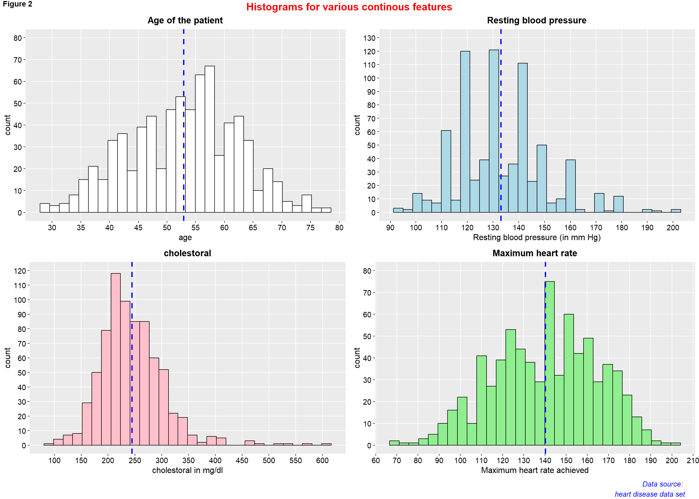
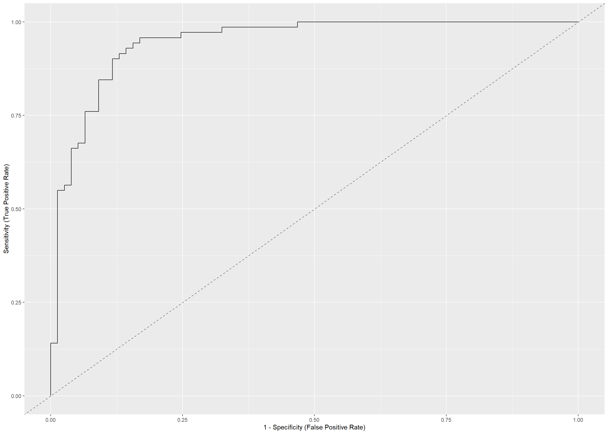

Predicting heart disease
1 Introduction
1.1 Overview
Cardiovascular diseases (CVDs) are the number 1 cause of death globally, taking an estimated 17.9 million lives each year, which accounts for 31% of all deaths worldwide. Four out of 5CVD deaths are due to heart attacks and strokes, and one-third of these deaths occur prematurely in people under 70 years of age. This makes it important for health facilities to be able to predict occurrences of heart diseases in order to make plans for early treatment (Assmann et al. 2005). Heart failure is a common event caused by CVDs and this dataset contains 11 features that can be used to predict a possible heart disease.
People with cardiovascular disease or who are at high cardiovascular risk (due to the presence of one or more risk factors such as hypertension, diabetes, hyperlipidaemia or already established disease) need early detection and management wherein a machine learning model can be of great help.
1.2 About the Data
This dataset contains 918 observations with 12 features. The data dictionary is as follows:
- output: target variable (1=has heart attack, 0= has no heart attack)
- age: Age of the patient
- sex: Sex of the patient (1= male, 0= female).
- cp: chest pain type (0=typical angina, 1=atypical angina, 2=non-anginal and 3=asymptomatic)
- trtbps: resting blood pressure (in mm Hg)
- chol: cholestoral in mg/dl fetched via BMI sensor
- fbs: fasting blood sugar (>120mg/dl=1, <= 120mg/dl=0).
- restecg: resting electrocardiographic results( 0=normal, 1=having ST-T wave abnormality, 2=showing probable or definate left ventricular hypertrophy by Este’s criteria.)
- thalach: Maximum heart rate achieved.
- exng: exercise induced angina; 1=yes, 0=no.
- oldpeak: ST depression.
- slp = slope of peak exercise; 0=upsloping, 1=flat, 2=downsloping.
2 Data Exploration
2.1 loading Relevant packages
#Import relevant packages
library(tidyverse)
library(janitor)
library(readr)
library(plotly)
library(knitr)2.2 loading Data Set
heart_disease <- read_csv('https://raw.githubusercontent.com/reinpmomz/Predicting-heart-disease/main/data/heart.csv')%>%
clean_names()
#View(heart_disease)
head(heart_disease)## # A tibble: 6 x 12
## age sex cp trtbps chol fbs restecg thalach exng oldpeak slp
## <dbl> <dbl> <dbl> <dbl> <dbl> <dbl> <dbl> <dbl> <dbl> <dbl> <dbl>
## 1 40 1 1 140 289 0 0 172 0 0 0
## 2 49 0 2 160 180 0 0 156 0 1 1
## 3 37 1 1 130 283 0 1 98 0 0 0
## 4 48 0 3 138 214 0 0 108 1 1.5 1
## 5 54 1 2 150 195 0 0 122 0 0 0
## 6 39 1 2 120 339 0 0 170 0 0 0
## # ... with 1 more variable: output <dbl>##checking the data structure
str(heart_disease)## spec_tbl_df [918 x 12] (S3: spec_tbl_df/tbl_df/tbl/data.frame)
## $ age : num [1:918] 40 49 37 48 54 39 45 54 37 48 ...
## $ sex : num [1:918] 1 0 1 0 1 1 0 1 1 0 ...
## $ cp : num [1:918] 1 2 1 3 2 2 1 1 3 1 ...
## $ trtbps : num [1:918] 140 160 130 138 150 120 130 110 140 120 ...
## $ chol : num [1:918] 289 180 283 214 195 339 237 208 207 284 ...
## $ fbs : num [1:918] 0 0 0 0 0 0 0 0 0 0 ...
## $ restecg: num [1:918] 0 0 1 0 0 0 0 0 0 0 ...
## $ thalach: num [1:918] 172 156 98 108 122 170 170 142 130 120 ...
## $ exng : num [1:918] 0 0 0 1 0 0 0 0 1 0 ...
## $ oldpeak: num [1:918] 0 1 0 1.5 0 0 0 0 1.5 0 ...
## $ slp : num [1:918] 0 1 0 1 0 0 0 0 1 0 ...
## $ output : num [1:918] 0 1 0 1 0 0 0 0 1 0 ...
## - attr(*, "spec")=
## .. cols(
## .. age = col_double(),
## .. sex = col_double(),
## .. cp = col_double(),
## .. trtbps = col_double(),
## .. chol = col_double(),
## .. fbs = col_double(),
## .. restecg = col_double(),
## .. thalach = col_double(),
## .. exng = col_double(),
## .. oldpeak = col_double(),
## .. slp = col_double(),
## .. output = col_double()
## .. )
## - attr(*, "problems")=<externalptr>From the output on the data structure, all of the data has been read as numeric values(‘double’ value or a decimal type with at least two decimal places) but some should be converted to factors since they are categorical.
2.3 Converting into factors
heart_disease_final <- heart_disease%>%
mutate(output= factor(output, levels = c(0,1),
labels = c("No heart attack", "Has Heart attack")))%>%
mutate(sex= factor(sex, levels = c(0,1),
labels = c("Female", "Male")))%>%
mutate(cp= factor(cp, levels = c(0,1,2,3),
labels = c("typical angina", "atypical angina", "non-anginal", "asymptomatic")))%>%
mutate(fbs= factor(fbs, levels = c(0,1),
labels = c("<= 120mg/dl", ">120mg/dl")))%>%
mutate(restecg= factor(restecg, levels = c(0,1,2),
labels = c("normal", "having ST_T \n abnormality", "showing probable or \n definate left\n ventricular hypertrophy")))%>%
mutate(exng= factor(exng, levels = c(0,1),
labels = c("No", "Yes")))%>%
mutate(slp= factor(slp, levels = c(0,1,2),
labels = c("upsloping", "flat", "downsloping")))%>%
filter(trtbps>0)%>%
filter(chol>0)var.labels = c(
age = "Age of the patient",
sex = "Sex of the patient",
cp = "Chest pain type",
trtbps = "Resting blood pressure (in mm Hg)",
chol = "Cholestoral in mg/dl",
fbs = "Fasting blood sugar",
restecg = "Resting electrocardiographic results",
thalach = "Maximum heart rate achieved",
exng = "Exercise induced angina",
oldpeak = "ST depression",
slp = "Slope of peak exercise",
output = "Heart disease")
heart_disease_final <- labelled::set_variable_labels(heart_disease_final, .labels = var.labels)
str(heart_disease_final)## tibble [746 x 12] (S3: tbl_df/tbl/data.frame)
## $ age : num [1:746] 40 49 37 48 54 39 45 54 37 48 ...
## ..- attr(*, "label")= chr "Age of the patient"
## $ sex : Factor w/ 2 levels "Female","Male": 2 1 2 1 2 2 1 2 2 1 ...
## ..- attr(*, "label")= chr "Sex of the patient"
## $ cp : Factor w/ 4 levels "typical angina",..: 2 3 2 4 3 3 2 2 4 2 ...
## ..- attr(*, "label")= chr "Chest pain type"
## $ trtbps : num [1:746] 140 160 130 138 150 120 130 110 140 120 ...
## ..- attr(*, "label")= chr "Resting blood pressure (in mm Hg)"
## $ chol : num [1:746] 289 180 283 214 195 339 237 208 207 284 ...
## ..- attr(*, "label")= chr "Cholestoral in mg/dl"
## $ fbs : Factor w/ 2 levels "<= 120mg/dl",..: 1 1 1 1 1 1 1 1 1 1 ...
## ..- attr(*, "label")= chr "Fasting blood sugar"
## $ restecg: Factor w/ 3 levels "normal","having ST_T \n abnormality",..: 1 1 2 1 1 1 1 1 1 1 ...
## ..- attr(*, "label")= chr "Resting electrocardiographic results"
## $ thalach: num [1:746] 172 156 98 108 122 170 170 142 130 120 ...
## ..- attr(*, "label")= chr "Maximum heart rate achieved"
## $ exng : Factor w/ 2 levels "No","Yes": 1 1 1 2 1 1 1 1 2 1 ...
## ..- attr(*, "label")= chr "Exercise induced angina"
## $ oldpeak: num [1:746] 0 1 0 1.5 0 0 0 0 1.5 0 ...
## ..- attr(*, "label")= chr "ST depression"
## $ slp : Factor w/ 3 levels "upsloping","flat",..: 1 2 1 2 1 1 1 1 2 1 ...
## ..- attr(*, "label")= chr "Slope of peak exercise"
## $ output : Factor w/ 2 levels "No heart attack",..: 1 2 1 2 1 1 1 1 2 1 ...
## ..- attr(*, "label")= chr "Heart disease"The categorial columns are sex, cp, fbs, restecg, exng, slp while continuous columns are age, trtbps, chol, thalach, oldpeak and target variable is output
2.4 checking missing values
mean(is.na(heart_disease_final))## [1] 0#which(is.na(heart_disease_final))
#which(!complete.cases(heart_disease_final))There were no missing values in our data set.
3 Exploratory data analysis
Exploring data is vital in giving a clue of the expected relationship between the dependent variable and the exploratory variables (Zuur et al. 2010).
3.1 Univariate analysis
This is analysis of one variable to enable us understand the distribution of values for a single variable.
3.1.1 Descriptives Frequency table
library(gtsummary)
library(flextable)
set_gtsummary_theme(list(
"tbl_summary-fn:percent_fun" = function(x) style_percent(x, digits = 1),
"tbl_summary-str:categorical_stat" = "{n} ({p}%)"
))
# Setting `Compact` theme
theme_gtsummary_compact()# make dataset with variables to summarize
tbl_summary(heart_disease_final,
type = list(
all_dichotomous() ~ "categorical",
all_continuous() ~ "continuous2")
, statistic = all_continuous() ~ c(
"{mean} ({sd})",
"{median} ({p25}, {p75})",
"{min}, {max}")
, digits = all_continuous() ~ 2
, missing = "always" # don't list missing data separately
,missing_text = "Missing"
) %>%
modify_header(label = "**Descriptives**") %>% # update the column header
bold_labels() %>%
italicize_levels()%>%
add_n() # add column with total number of non-missing observations| Descriptives | N | N = 7461 |
|---|---|---|
| Age of the patient | 746 | |
| Mean (SD) | 52.88 (9.51) | |
| Median (IQR) | 54.00 (46.00, 59.00) | |
| Range | 28.00, 77.00 | |
| Missing | 0 | |
| Sex of the patient | 746 | |
| Female | 182 (24.4%) | |
| Male | 564 (75.6%) | |
| Missing | 0 | |
| Chest pain type | 746 | |
| typical angina | 41 (5.50%) | |
| atypical angina | 166 (22.3%) | |
| non-anginal | 169 (22.7%) | |
| asymptomatic | 370 (49.6%) | |
| Missing | 0 | |
| Resting blood pressure (in mm Hg) | 746 | |
| Mean (SD) | 133.02 (17.28) | |
| Median (IQR) | 130.00 (120.00, 140.00) | |
| Range | 92.00, 200.00 | |
| Missing | 0 | |
| Cholestoral in mg/dl | 746 | |
| Mean (SD) | 244.64 (59.15) | |
| Median (IQR) | 237.00 (207.25, 275.00) | |
| Range | 85.00, 603.00 | |
| Missing | 0 | |
| Fasting blood sugar | 746 | |
| <= 120mg/dl | 621 (83.2%) | |
| >120mg/dl | 125 (16.8%) | |
| Missing | 0 | |
| Resting electrocardiographic results | 746 | |
| normal | 445 (59.7%) | |
| having ST_T abnormality | 125 (16.8%) | |
| showing probable or definate left ventricular hypertrophy | 176 (23.6%) | |
| Missing | 0 | |
| Maximum heart rate achieved | 746 | |
| Mean (SD) | 140.23 (24.52) | |
| Median (IQR) | 140.00 (122.00, 160.00) | |
| Range | 69.00, 202.00 | |
| Missing | 0 | |
| Exercise induced angina | 746 | |
| No | 459 (61.5%) | |
| Yes | 287 (38.5%) | |
| Missing | 0 | |
| ST depression | 746 | |
| Mean (SD) | 0.90 (1.07) | |
| Median (IQR) | 0.50 (0.00, 1.50) | |
| Range | -0.10, 6.20 | |
| Missing | 0 | |
| Slope of peak exercise | 746 | |
| upsloping | 349 (46.8%) | |
| flat | 354 (47.5%) | |
| downsloping | 43 (5.76%) | |
| Missing | 0 | |
| Heart disease | 746 | |
| No heart attack | 390 (52.3%) | |
| Has Heart attack | 356 (47.7%) | |
| Missing | 0 | |
| 1 n (%) | ||
3.1.2 Visualization
library(ggpubr)
p1 <- ggplot(heart_disease_final, aes(x=output))+
geom_bar(aes(fill = output), show.legend = FALSE)+
labs(x="",y="", title = "Heart disease")+
geom_text(aes(label = ..count..), stat = "count", vjust = 1.5, colour = "black")+
#guides(fill = FALSE)+
theme_pubclean()+
theme(axis.title = element_text(face="bold",color="black",size=13),
#legend.position = "none",
axis.text.y = element_text(color="black",size=12),
axis.text.x = element_text(color="black",size=11),
plot.title = element_text(hjust = 0.5, face="bold",color="black",size=13),
panel.grid.major.x = element_blank())
p2 <- ggplot(heart_disease_final, aes(x=sex))+
geom_bar(aes(fill = sex), show.legend = FALSE)+
labs(x="",y="", title = "Sex of the patient")+
scale_y_continuous(breaks = seq(0, 600, by = 100), limits = c(0, 600))+
theme_pubclean()+
geom_text(aes(label = ..count..), stat = "count", vjust = 1.5, colour = "black")+
theme(axis.title = element_text(face="bold",color="black",size=13),
axis.text = element_text(color="black",size=12),
plot.title = element_text(hjust = 0.5, face="bold",color="black",size=13),
panel.grid.major.x = element_blank())
p3 <- ggplot(heart_disease_final, aes(x=cp))+
geom_bar(aes(fill = cp), show.legend = FALSE)+
labs(x="",y="", title = "Chest pain Type")+
scale_y_continuous(breaks = seq(0, 400, by = 50), limits = c(0, 400))+
theme_pubclean()+
geom_text(aes(label = ..count..), stat = "count", vjust = 1.5, colour = "black")+
theme(axis.title = element_text(face="bold",color="black",size=13),
axis.text.y = element_text(color="black",size=12),
axis.text.x = element_text(color="black",size=12, angle = 90),
plot.title = element_text(hjust = 0.5, face="bold",color="black",size=13),
panel.grid.major.x = element_blank())
p4 <- ggplot(heart_disease_final, aes(x=fbs))+
geom_bar(aes(fill = fbs), show.legend = FALSE)+
labs(x="",y="", title = "Fasting blood sugar")+
scale_y_continuous(breaks = seq(0, 750, by = 100), limits = c(0, 750))+
theme_pubclean()+
geom_text(aes(label = ..count..), stat = "count", vjust = 1.5, colour = "black")+
theme(axis.title= element_text(face="bold",color="black",size=13),
axis.text = element_text(color="black",size=12),
plot.title = element_text(hjust = 0.5, face="bold",color="black",size=13),
panel.grid.major.x = element_blank())
p5 <- ggplot(heart_disease_final, aes(x=restecg))+
geom_bar(aes(fill = restecg), show.legend = FALSE)+
labs(x="",y="", title = "Resting electrocardiographic results")+
scale_y_continuous(breaks = seq(0, 500, by = 100), limits = c(0, 500))+
theme_pubclean()+
geom_text(aes(label = ..count..), stat = "count", vjust = 1.5, colour = "black")+
theme(axis.title = element_text(face="bold",color="black",size=13),
axis.text.y = element_text(color="black",size=12),
axis.text.x = element_text(color="black",size=11, angle = 90),
plot.title = element_text(hjust = 0.5, face="bold",color="black",size=13),
panel.grid.major.x = element_blank())
p6 <- ggplot(heart_disease_final, aes(x=exng))+
geom_bar(aes(fill = exng), show.legend = FALSE)+
labs(x="",y="", title = "Exercise induced angina")+
scale_y_continuous(breaks = seq(0, 500, by = 100), limits = c(0, 500))+
theme_pubclean()+
geom_text(aes(label = ..count..), stat = "count", vjust = 1.5, colour = "black")+
theme(axis.title = element_text(face="bold",color="black",size=13),
axis.text = element_text(color="black",size=12),
plot.title = element_text(hjust = 0.5, face="bold",color="black",size=13),
panel.grid.major.x = element_blank())
p7 <- ggplot(heart_disease_final, aes(x=slp))+
geom_bar(aes(fill = slp), show.legend = FALSE)+
labs(x="",y="", title = "Slope of peak exercise")+
scale_y_continuous(breaks = seq(0, 400, by = 50), limits = c(0, 400))+
theme_pubclean()+
geom_text(aes(label = ..count..), stat = "count", vjust = 1.5, colour = "black")+
theme(axis.title = element_text(face="bold",color="black",size=13),
axis.text = element_text(color="black",size=12),
plot.title = element_text(hjust = 0.5, face="bold",color="black",size=13),
panel.grid.major.x = element_blank())
figure1 <- ggarrange(p1, p2, p3, p4, p5, p6, p7,
#labels = c("A", "B", "C","D", "E", "F", "G"),
ncol = 4, nrow = 2)
annotate_figure(figure1,
top = text_grob("Count plots for various categorical features",
color = "red", face = "bold", size = 15),
bottom = text_grob("Data source: \n heart disease data set", color = "blue",
hjust = 1, x = 0.98, face = "italic", size = 10),
#left = text_grob("Figure arranged using ggpubr", color = "green", rot = 90),
#right = "",
fig.lab = "Figure 1", fig.lab.face = "bold"
)
p8 <- ggplot(heart_disease_final, aes(x=age)) +
geom_histogram(color="black", fill="white")+
geom_vline(aes(xintercept=mean(age)),
color="blue", linetype="dashed", size=1)+
scale_y_continuous(breaks = seq(0, 85, by = 10), limits = c(0, 80))+
scale_x_continuous(n.breaks = 10)+
labs(x="age",y="count", title = "Age of the patient")+
theme(axis.title = element_text(color="black",size=12),
axis.text = element_text(color="black",size=11),
plot.title = element_text(hjust = 0.5, face="bold",color="black",size=13),
panel.grid.minor.y = element_blank(),
panel.grid.minor.x = element_blank())
p9 <-ggplot(heart_disease_final, aes(x=trtbps)) +
geom_histogram(color="black", fill="lightblue")+
geom_vline(aes(xintercept=mean(trtbps)),
color="blue", linetype="dashed", size=1)+
scale_y_continuous(breaks = seq(0, 130, by = 10), limits = c(0, 130))+
scale_x_continuous(n.breaks = 10)+
labs(x="Resting blood pressure (in mm Hg)",y="count", title = "Resting blood pressure")+
theme(axis.title = element_text(color="black",size=12),
axis.text = element_text(color="black",size=11),
plot.title = element_text(hjust = 0.5, face="bold",color="black",size=13),
panel.grid.minor.y = element_blank(),
panel.grid.minor.x = element_blank())
p10 <-ggplot(heart_disease_final, aes(x=chol)) +
geom_histogram(color="black", fill="pink")+
geom_vline(aes(xintercept=mean(chol)),
color="blue", linetype="dashed", size=1)+
scale_y_continuous(breaks = seq(0, 120, by = 10), limits = c(0, 120))+
scale_x_continuous(n.breaks = 12)+
labs(x="cholestoral in mg/dl",y="count", title = "cholestoral")+
theme(axis.title = element_text(color="black",size=12),
axis.text = element_text(color="black",size=11),
plot.title = element_text(hjust = 0.5, face="bold",color="black",size=13),
panel.grid.minor.y = element_blank(),
panel.grid.minor.x = element_blank())
p11 <-ggplot(heart_disease_final, aes(x=thalach)) +
geom_histogram(color="black", fill="lightgreen")+
geom_vline(aes(xintercept=mean(thalach)),
color="blue", linetype="dashed", size=1)+
scale_y_continuous(breaks = seq(0, 80, by = 10), limits = c(0, 80))+
scale_x_continuous(n.breaks = 12)+
labs(x="Maximum heart rate achieved",y="count", title = "Maximum heart rate")+
theme(axis.title = element_text(color="black",size=12),
axis.text = element_text(color="black",size=11),
plot.title = element_text(hjust = 0.5, face="bold",color="black",size=13),
panel.grid.minor.y = element_blank(),
panel.grid.minor.x = element_blank())
figure2 <- ggarrange(p8, p9, p10, p11,
ncol = 2, nrow = 2)
annotate_figure(figure2,
top = text_grob("Histograms for various continous features",
color = "red", face = "bold", size = 15),
bottom = text_grob("Data source: \n heart disease data set", color = "blue",
hjust = 1, x = 0.98, face = "italic", size = 10),
#left = text_grob("Figure arranged using ggpubr", color = "green", rot = 90),
#right = "",
fig.lab = "Figure 2", fig.lab.face = "bold"
)
3.2 Bivariate analysis
3.2.1 Difference Frequency table
# make dataset with variables to summarize
tbl_summary(heart_disease_final,
by = output,
type = list(
all_dichotomous() ~ "categorical",
all_continuous() ~ "continuous2")
, statistic = all_continuous() ~ c(
"{mean} ({sd})",
"{median} ({p25}, {p75})",
"{min}, {max}")
, digits = all_continuous() ~ 2
, missing = "always" # don't list missing data separately
,missing_text = "Missing"
) %>%
modify_header(label = "**Variables**") %>% # update the column header
bold_labels() %>%
italicize_levels()%>%
add_n()%>% # add column with total number of non-missing observations
add_p(pvalue_fun = ~style_pvalue(.x, digits = 3),
c(age, trtbps, chol, thalach, oldpeak) ~ "t.test",
test.args = c(age, trtbps, chol, thalach, oldpeak) ~ list(var.equal = TRUE)) %>%
bold_p(t= 0.05) %>% # bold p-values under a given threshold (default 0.05)
#add_overall() %>%
#add_difference() %>% #add column for difference between two group, confidence interval, and p-value
modify_spanning_header(c("stat_1", "stat_2") ~ "**Heart Disease**") %>%
#modify_caption("**Table 1. Patient Characteristics**")%>%
modify_footnote(
all_stat_cols() ~ "Mean (SD); Median (IQR); Range; Frequency (%)"
)| Variables | N | Heart Disease | p-value2 | |
|---|---|---|---|---|
| No heart attack, N = 3901 | Has Heart attack, N = 3561 | |||
| Age of the patient | 746 | <0.001 | ||
| Mean (SD) | 50.17 (9.31) | 55.85 (8.82) | ||
| Median (IQR) | 51.00 (43.00, 56.00) | 57.00 (50.00, 62.00) | ||
| Range | 28.00, 76.00 | 31.00, 77.00 | ||
| Missing | 0 | 0 | ||
| Sex of the patient | 746 | <0.001 | ||
| Female | 142 (36.4%) | 40 (11.2%) | ||
| Male | 248 (63.6%) | 316 (88.8%) | ||
| Missing | 0 | 0 | ||
| Chest pain type | 746 | <0.001 | ||
| typical angina | 26 (6.67%) | 15 (4.21%) | ||
| atypical angina | 145 (37.2%) | 21 (5.90%) | ||
| non-anginal | 123 (31.5%) | 46 (12.9%) | ||
| asymptomatic | 96 (24.6%) | 274 (77.0%) | ||
| Missing | 0 | 0 | ||
| Resting blood pressure (in mm Hg) | 746 | <0.001 | ||
| Mean (SD) | 130.16 (16.14) | 136.15 (17.96) | ||
| Median (IQR) | 130.00 (120.00, 140.00) | 136.00 (123.75, 145.00) | ||
| Range | 94.00, 190.00 | 92.00, 200.00 | ||
| Missing | 0 | 0 | ||
| Cholestoral in mg/dl | 746 | 0.005 | ||
| Mean (SD) | 238.77 (55.39) | 251.06 (62.46) | ||
| Median (IQR) | 231.50 (203.00, 269.00) | 246.00 (212.00, 283.25) | ||
| Range | 85.00, 564.00 | 100.00, 603.00 | ||
| Missing | 0 | 0 | ||
| Fasting blood sugar | 746 | <0.001 | ||
| <= 120mg/dl | 347 (89.0%) | 274 (77.0%) | ||
| >120mg/dl | 43 (11.0%) | 82 (23.0%) | ||
| Missing | 0 | 0 | ||
| Resting electrocardiographic results | 746 | <0.001 | ||
| normal | 257 (65.9%) | 188 (52.8%) | ||
| having ST_T abnormality | 52 (13.3%) | 73 (20.5%) | ||
| showing probable or definate left ventricular hypertrophy | 81 (20.8%) | 95 (26.7%) | ||
| Missing | 0 | 0 | ||
| Maximum heart rate achieved | 746 | <0.001 | ||
| Mean (SD) | 149.06 (23.11) | 130.55 (22.30) | ||
| Median (IQR) | 150.50 (135.00, 167.00) | 130.00 (115.00, 147.00) | ||
| Range | 69.00, 202.00 | 71.00, 195.00 | ||
| Missing | 0 | 0 | ||
| Exercise induced angina | 746 | <0.001 | ||
| No | 340 (87.2%) | 119 (33.4%) | ||
| Yes | 50 (12.8%) | 237 (66.6%) | ||
| Missing | 0 | 0 | ||
| ST depression | 746 | <0.001 | ||
| Mean (SD) | 0.39 (0.68) | 1.46 (1.15) | ||
| Median (IQR) | 0.00 (0.00, 0.60) | 1.50 (0.50, 2.00) | ||
| Range | -0.10, 4.20 | 0.00, 6.20 | ||
| Missing | 0 | 0 | ||
| Slope of peak exercise | 746 | <0.001 | ||
| upsloping | 304 (77.9%) | 45 (12.6%) | ||
| flat | 75 (19.2%) | 279 (78.4%) | ||
| downsloping | 11 (2.82%) | 32 (8.99%) | ||
| Missing | 0 | 0 | ||
| 1 Mean (SD); Median (IQR); Range; Frequency (%) | ||||
| 2 Two Sample t-test; Pearson's Chi-squared test | ||||
3.2.2 Visualization
p12 <- ggplot(heart_disease_final, aes(x=output))+
geom_bar(aes(fill = sex), show.legend = TRUE, position="dodge")+
labs(x="",y="", title = "Sex of the patient", fill="")+
scale_y_continuous(breaks = seq(0, 350, by = 50), limits = c(0, 350))+
theme_pubclean()+
geom_text(aes(fill=sex, label = ..count..), stat = "count", vjust = 1.2, colour = "black",
position = position_dodge(.9))+
theme(axis.title = element_text(face="bold",color="black",size=13),
legend.position = "top",
axis.text = element_text(color="black",size=12),
plot.title = element_text(hjust = 0.5, face="bold",color="black",size=13),
panel.grid.major.x = element_blank())
p13 <- ggplot(heart_disease_final, aes(x=output))+
geom_bar(aes(fill = cp), show.legend = TRUE, position="dodge")+
labs(x="",y="", title = "Chest pain Type", fill="")+
scale_y_continuous(breaks = seq(0, 300, by = 50), limits = c(0, 300))+
theme_pubclean()+
geom_text(aes(fill=cp, label = ..count..), stat = "count", vjust = 0.5, colour = "black",
position = position_dodge(.9))+
theme(axis.title = element_text(face="bold",color="black",size=13),
legend.position = "top",
axis.text.y = element_text(color="black",size=12),
axis.text.x = element_text(color="black",size=12),
plot.title = element_text(hjust = 0.5, face="bold",color="black",size=13),
panel.grid.major.x = element_blank())+
guides(fill = guide_legend(nrow = 2))
p14 <- ggplot(heart_disease_final, aes(x=output))+
geom_bar(aes(fill = fbs), show.legend = TRUE, position="dodge")+
labs(x="",y="", title = "Fasting blood sugar", fill="")+
scale_y_continuous(breaks = seq(0, 350, by = 50), limits = c(0, 350))+
theme_pubclean()+
geom_text(aes(fill=fbs, label = ..count..), stat = "count", vjust = 1.2, colour = "black",
position = position_dodge(.9))+
theme(axis.title= element_text(face="bold",color="black",size=13),
legend.position = "top",
axis.text = element_text(color="black",size=12),
plot.title = element_text(hjust = 0.5, face="bold",color="black",size=13),
panel.grid.major.x = element_blank())
p15 <- ggplot(heart_disease_final, aes(x=output))+
geom_bar(aes(fill = restecg), show.legend = TRUE, position="dodge")+
labs(x="",y="", title = "Resting electrocardiographic results", fill="")+
scale_y_continuous(breaks = seq(0, 300, by = 50), limits = c(0, 300))+
theme_pubclean()+
geom_text(aes(fill=restecg, label = ..count..), stat = "count", vjust = 1.2, colour = "black",
position = position_dodge(.9))+
theme(axis.title = element_text(face="bold",color="black",size=13),
legend.position = "top",
axis.text.y = element_text(color="black",size=12),
axis.text.x = element_text(color="black",size=12),
plot.title = element_text(hjust = 0.5, face="bold",color="black",size=13),
panel.grid.major.x = element_blank())
p16 <- ggplot(heart_disease_final, aes(x=output))+
geom_bar(aes(fill = exng), show.legend = TRUE, position="dodge")+
labs(x="",y="", title = "Exercise induced angina", fill="")+
scale_y_continuous(breaks = seq(0, 350, by = 50), limits = c(0, 350))+
theme_pubclean()+
geom_text(aes(fill=exng, label = ..count..), stat = "count", vjust = 1.2, colour = "black",
position = position_dodge(.9))+
theme(axis.title = element_text(face="bold",color="black",size=13),
legend.position = "top",
axis.text = element_text(color="black",size=12),
plot.title = element_text(hjust = 0.5, face="bold",color="black",size=13),
panel.grid.major.x = element_blank())
p17 <- ggplot(heart_disease_final, aes(x=output))+
geom_bar(aes(fill = slp), show.legend = TRUE, position="dodge")+
labs(x="",y="", title = "Slope of peak exercise", fill="")+
scale_y_continuous(breaks = seq(0, 350, by = 50), limits = c(0, 350))+
theme_pubclean()+
geom_text(aes(fill=slp, label = ..count..), stat = "count", vjust = 0.5, colour = "black",
position = position_dodge(.9))+
theme(axis.title = element_text(face="bold",color="black",size=13),
legend.position = "top",
axis.text = element_text(color="black",size=12),
plot.title = element_text(hjust = 0.5, face="bold",color="black",size=13),
panel.grid.major.x = element_blank())
figure3 <- ggarrange( p12, p13, p14, p15, p16, p17,
ncol = 3, nrow = 2)
annotate_figure(figure3,
top = text_grob("Distribution by Heart disease of various categorical features",
color = "red", face = "bold", size = 15),
bottom = text_grob("Data source: \n heart disease data set", color = "blue",
hjust = 1, x = 0.98, face = "italic", size = 10),
#left = text_grob("Figure arranged using ggpubr", color = "green", rot = 90),
#right = "",
fig.lab = "Figure 3", fig.lab.face = "bold"
)
p18 <- ggplot(heart_disease_final, aes(x=age, fill=output)) +
geom_density(alpha=0.4)+
scale_y_continuous(n.breaks = 10)+
scale_x_continuous(breaks = seq(25, 80, by = 5), limits = c(25, 80))+
labs(x="age",y="density", title = "Age of the patient")+
theme(axis.title = element_text(color="black",size=12),
legend.position = "top",
axis.text = element_text(color="black",size=11),
plot.title = element_text(hjust = 0.5, face="bold",color="black",size=13),
panel.grid.minor.y = element_blank(),
panel.grid.minor.x = element_blank())+
guides(fill = guide_legend(title = ""))
p19 <-ggplot(heart_disease_final, aes(x=trtbps, fill=output)) +
geom_density(alpha=0.4)+
scale_y_continuous(n.breaks = 10)+
scale_x_continuous(breaks = seq(90, 200, by = 10), limits = c(90, 200))+
labs(x="Resting blood pressure (in mm Hg)",y="density", title = "Resting blood pressure")+
theme(axis.title = element_text(color="black",size=12),
legend.position = "top",
axis.text.y = element_text(color="black",size=11),
axis.text.x = element_text(color="black",size=9, angle = 90),
plot.title = element_text(hjust = 0.5, face="bold",color="black",size=13),
panel.grid.minor.y = element_blank(),
panel.grid.minor.x = element_blank())+
guides(fill = guide_legend(title = ""))
p20 <-ggplot(heart_disease_final, aes(x=chol, fill=output)) +
geom_density(alpha=0.4)+
scale_y_continuous(n.breaks = 10)+
scale_x_continuous(breaks = seq(50, 650, by = 50), limits = c(50, 650))+
labs(x="cholestoral in mg/dl",y="density", title = "cholestoral")+
theme(axis.title = element_text(color="black",size=12),
legend.position = "top",
axis.text.y = element_text(color="black",size=11),
axis.text.x = element_text(color="black",size=9, angle = 90),
plot.title = element_text(hjust = 0.5, face="bold",color="black",size=13),
panel.grid.minor.y = element_blank(),
panel.grid.minor.x = element_blank())+
guides(fill = guide_legend(title = ""))
p21 <-ggplot(heart_disease_final, aes(x=thalach, fill=output)) +
geom_density(alpha=0.4)+
scale_y_continuous(n.breaks = 10)+
scale_x_continuous(breaks = seq(60, 210, by = 10), limits = c(60, 210))+
labs(x="Maximum heart rate achieved",y="density", title = "Maximum heart rate")+
theme(axis.title = element_text(color="black",size=12),
legend.position = "top",
axis.text.y = element_text(color="black",size=11),
axis.text.x = element_text(color="black",size=9, angle=90),
plot.title = element_text(hjust = 0.5, face="bold",color="black",size=13),
panel.grid.minor.y = element_blank(),
panel.grid.minor.x = element_blank())+
guides(fill = guide_legend(title = ""))
p22 <- ggplot(heart_disease_final, aes(output, age))+
geom_boxplot(aes(colour = output), outlier.colour = "black",
outlier.shape = 8, show.legend = FALSE)+
labs(x="",y="age", title = "Age of the patient")+
scale_y_continuous(breaks = seq(25, 80, by = 5), limits = c(25, 80))+
theme(axis.title = element_text(face="bold",color="black",size=13),
axis.text = element_text(color="black",size=12),
plot.title = element_text(hjust = 0.5, face="bold",color="black",size=13),
panel.grid.major.x = element_blank(),
panel.grid.minor.y = element_blank())
p23 <- ggplot(heart_disease_final, aes(output, trtbps))+
geom_boxplot(aes(colour = output), outlier.colour = "black",
outlier.shape = 1, show.legend = FALSE)+
labs(x="",y="Resting blood pressure (mm Hg)", title = "Resting blood pressure")+
scale_y_continuous(breaks = seq(90, 200, by = 10), limits = c(90, 200))+
theme(axis.title = element_text(face="bold",color="black",size=13),
axis.text = element_text(color="black",size=12),
plot.title = element_text(hjust = 0.5, face="bold",color="black",size=13),
panel.grid.major.x = element_blank(),
panel.grid.minor.y = element_blank())
p24 <-ggplot(heart_disease_final, aes(output, chol))+
geom_boxplot(aes(colour = output), outlier.colour = "black",
outlier.shape = 1, show.legend = FALSE)+
labs(x="",y="cholestoral in mg/dl", title = "cholestoral")+
scale_y_continuous(breaks = seq(50, 650, by = 50), limits = c(50, 650))+
theme(axis.title = element_text(face="bold",color="black",size=13),
axis.text = element_text(color="black",size=12),
plot.title = element_text(hjust = 0.5, face="bold",color="black",size=13),
panel.grid.major.x = element_blank(),
panel.grid.minor.y = element_blank())
p25 <-ggplot(heart_disease_final, aes(output, thalach))+
geom_boxplot(aes(colour = output), outlier.colour = "black",
outlier.shape = 1, show.legend = FALSE)+
labs(x="",y="Maximum heart rate achieved", title = "Maximum heart rate")+
scale_y_continuous(breaks = seq(60, 200, by = 10), limits = c(60, 200))+
theme(axis.title = element_text(face="bold",color="black",size=13),
axis.text = element_text(color="black",size=12),
plot.title = element_text(hjust = 0.5, face="bold",color="black",size=13),
panel.grid.major.x = element_blank(),
panel.grid.minor.y = element_blank())
figure4 <- ggarrange( p18, p19, p20, p21, p22, p23, p24, p25,
ncol = 4, nrow = 2)
annotate_figure(figure4,
top = text_grob("Distribution by Heart disease of various continous features",
color = "red", face = "bold", size = 15),
bottom = text_grob("Data source: \n heart disease data set", color = "blue",
hjust = 1, x = 0.98, face = "italic", size = 10),
#left = text_grob("Figure arranged using ggpubr", color = "green", rot = 90),
#right = "",
fig.lab = "Figure 4", fig.lab.face = "bold"
)
3.2.3 Correlation
A negative correlation implies that the two variables under consideration vary in opposite directions, that is, if a variable increases the other decreases and vice versa. On the other hand, a positive correlation implies that the two variables under consideration vary in the same direction, i.e., if a variable increases the other one increases and if one decreases the other one decreases as well
# improved correlation matrix
library(corrplot)
corrplot(cor(heart_disease_final%>%mutate(across(c(2,3,6, 7, 9, 11, 12), as.numeric)),
method='spearman'),
method = "color", #number
addCoef.col = "black",
number.cex = 0.95,
type = "upper" # show only upper side #full
)
Only correlations with p-values smaller than the significance level (p<0.05)should be interpreted.
# correlation tests for whole dataset
library(Hmisc)
res <- rcorr(as.matrix(heart_disease_final%>%mutate(across(c(2,3,6, 7, 9, 11, 12), as.numeric)))) # rcorr() accepts matrices only
# display p-values (rounded to 3 decimals)
kable(
round(res$P, 3)
)| age | sex | cp | trtbps | chol | fbs | restecg | thalach | exng | oldpeak | slp | output | |
|---|---|---|---|---|---|---|---|---|---|---|---|---|
| age | NA | 0.264 | 0.000 | 0.000 | 0.109 | 0.000 | 0.000 | 0.000 | 0.000 | 0.000 | 0.000 | 0.000 |
| sex | 0.264 | NA | 0.000 | 0.349 | 0.003 | 0.009 | 0.713 | 0.000 | 0.000 | 0.001 | 0.000 | 0.000 |
| cp | 0.000 | 0.000 | NA | 0.235 | 0.029 | 0.236 | 0.032 | 0.000 | 0.000 | 0.000 | 0.000 | 0.000 |
| trtbps | 0.000 | 0.349 | 0.235 | NA | 0.009 | 0.000 | 0.090 | 0.001 | 0.000 | 0.000 | 0.000 | 0.000 |
| chol | 0.109 | 0.003 | 0.029 | 0.009 | NA | 0.141 | 0.064 | 0.588 | 0.018 | 0.110 | 0.032 | 0.005 |
| fbs | 0.000 | 0.009 | 0.236 | 0.000 | 0.141 | NA | 0.000 | 0.005 | 0.003 | 0.129 | 0.000 | 0.000 |
| restecg | 0.000 | 0.713 | 0.032 | 0.090 | 0.064 | 0.000 | NA | 0.488 | 0.194 | 0.001 | 0.003 | 0.002 |
| thalach | 0.000 | 0.000 | 0.000 | 0.001 | 0.588 | 0.005 | 0.488 | NA | 0.000 | 0.000 | 0.000 | 0.000 |
| exng | 0.000 | 0.000 | 0.000 | 0.000 | 0.018 | 0.003 | 0.194 | 0.000 | NA | 0.000 | 0.000 | 0.000 |
| oldpeak | 0.000 | 0.001 | 0.000 | 0.000 | 0.110 | 0.129 | 0.001 | 0.000 | 0.000 | NA | 0.000 | 0.000 |
| slp | 0.000 | 0.000 | 0.000 | 0.000 | 0.032 | 0.000 | 0.003 | 0.000 | 0.000 | 0.000 | NA | 0.000 |
| output | 0.000 | 0.000 | 0.000 | 0.000 | 0.005 | 0.000 | 0.002 | 0.000 | 0.000 | 0.000 | 0.000 | NA |
After exploring the data, a statistical model will be used to give the final conclusion of the relationship. The dependent variable, “output” is categorical with two variables while the independent variables are more than one and are a mixture of categorical and continuous data and hence a binary logistic model will be applied. This model will be trained and tested and used to make some predictions.
4 Logistic Regression
4.1 Splitting the data for training and testing
spliting the data in a 80:20 ratio (training:testing). We use set.seed() to make sure that the results are repeatable. We also use the outcome variable, output to stratify. This is to ensure that the distribution of the outcome is comparable in both data sets.
library(rsample)
set.seed(123)
split <- initial_split(heart_disease_final, prop = 0.8, strata = output)
train <- training(split)
test <- testing(split)
#initial_time_split() takes the 1st prop samples for training,instead of random selection.
#sample=sample.split(mydata, SplitRatio = 0.80)
#train<-subset(mydata, sample==TRUE)
#test<-subset(mydata, sample==FALSE)4.2 model
glm_logistic_reg <-glm(formula=output~.,data=train, family="binomial")
#summary(glm_logistic_reg)4.3 model statistics
broom::glance(glm_logistic_reg)## # A tibble: 1 x 8
## null.deviance df.null logLik AIC BIC deviance df.residual nobs
## <dbl> <int> <dbl> <dbl> <dbl> <dbl> <int> <int>
## 1 828. 597 -198. 429. 499. 397. 582 598#performance::check_collinearity(glm_logistic_reg)
performance::check_model(glm_logistic_reg)
#performance::performance_accuracy(glm_logistic_reg)
#plot(performance::performance_roc(glm_logistic_reg))4.4 model results
tbl_regression(glm_logistic_reg, exponentiate = TRUE,
pvalue_fun = ~style_pvalue(.x, digits = 3),
)%>%
#add_global_p()%>% # add global p-value for categorical variables
bold_p(t= 0.05) %>% # bold p-values under a given threshold (default 0.05)
bold_labels() %>%
italicize_levels()%>%
modify_header(label = "**Logistic regression**")%>% # update the column header
add_significance_stars(
pattern = "{estimate} ({conf.low}-{conf.high}){stars}",
hide_ci = TRUE, hide_se = TRUE , hide_p = FALSE) %>%
modify_header(estimate ~ "**AOR (95% CI)**") %>%
modify_footnote(estimate ~ "AOR = Adjusted Odds Ratio, CI = Confidence Interval", abbreviation = TRUE)| Logistic regression | AOR (95% CI)1,2 | p-value |
|---|---|---|
| Age of the patient | 1.03 (1.00-1.06) | 0.069 |
| Sex of the patient | ||
| Female | — | |
| Male | 5.08 (2.62-10.2)*** | <0.001 |
| Chest pain type | ||
| typical angina | — | |
| atypical angina | 0.76 (0.23-2.48) | 0.641 |
| non-anginal | 0.87 (0.30-2.56) | 0.801 |
| asymptomatic | 3.88 (1.40-11.3)* | 0.010 |
| Resting blood pressure (in mm Hg) | 1.01 (0.99-1.03) | 0.266 |
| Cholestoral in mg/dl | 1.00 (1.00-1.01) | 0.098 |
| Fasting blood sugar | ||
| <= 120mg/dl | — | |
| >120mg/dl | 1.52 (0.75-3.12) | 0.251 |
| Resting electrocardiographic results | ||
| normal | — | |
| having ST_T abnormality | 0.95 (0.45-2.02) | 0.885 |
| showing probable or definate left ventricular hypertrophy | 1.24 (0.65-2.36) | 0.510 |
| Maximum heart rate achieved | 1.00 (0.99-1.01) | 0.936 |
| Exercise induced angina | ||
| No | — | |
| Yes | 2.43 (1.33-4.42)** | 0.004 |
| ST depression | 1.50 (1.11-2.06)** | 0.010 |
| Slope of peak exercise | ||
| upsloping | — | |
| flat | 10.9 (6.10-20.2)*** | <0.001 |
| downsloping | 3.76 (1.17-12.4)* | 0.027 |
| 1 *p<0.05; **p<0.01; ***p<0.001 | ||
| 2 AOR = Adjusted Odds Ratio, CI = Confidence Interval | ||
Statistically significant variables are Male(Sex), Asymptomatic (chest pain type), Yes (Angina), ST depression, flat (slope of peak exercise) and downsloping (slope of peak exercise).
Having Asymptomatic chest pain type, Angina, flat slope of peak exercise, downsloping slope of peak exercise, high ST depression and being Male are significantly associated with higher odds of having a heart attack. e.g People with Angina are 2.43 times more likely to get heart attack than those with no Angina. Males are 5.08 times more likely to get heart attack than females.
atypical angina chest pain type, non-anginal chest pain type, having ST_T abnormality sesting electrocardiographic results are associated with lower odds of heart attack. However they do not have a significant effect on heart attack.
5 Evaluating our Model
5.1 Fitting with testing data
test$prediction <-predict(glm_logistic_reg, test, type= "response")
##replacing probabilities with dummies
test$predicted <- as.factor(ifelse(test$prediction<0.5, "No heart attack", "Has Heart attack"))
test <- test%>%
mutate(predicted= factor(predicted, levels = c("No heart attack", "Has Heart attack")))
test1 <- test%>%
mutate(across(c(predicted, output), fct_rev))
##creating a confusion matrix
table(Predicted=test1$predicted, Actual=test1$output)## Actual
## Predicted Has Heart attack No heart attack
## Has Heart attack 68 14
## No heart attack 3 63##getting percentage of misclassification
1-sum(diag(table(Predicted=test1$predicted, Actual=test1$output)))/sum(table(Predicted=test1$predicted, Actual=test1$output))## [1] 0.1148649##getting percentage of accuracy
sum(diag(table(Predicted=test1$predicted, Actual=test1$output)))/sum(table(Predicted=test1$predicted, Actual=test1$output))## [1] 0.8851351##Testing for goodness of fit.
with(glm_logistic_reg, pchisq(null.deviance - deviance, df.null - df.residual, lower.tail = FALSE))## [1] 2.407305e-825.2 Confussion matrix
library(caret)
confusionMatrix(test1$predicted, test1$output)## Confusion Matrix and Statistics
##
## Reference
## Prediction Has Heart attack No heart attack
## Has Heart attack 68 14
## No heart attack 3 63
##
## Accuracy : 0.8851
## 95% CI : (0.8225, 0.9316)
## No Information Rate : 0.5203
## P-Value [Acc > NIR] : < 2e-16
##
## Kappa : 0.7713
##
## Mcnemar's Test P-Value : 0.01529
##
## Sensitivity : 0.9577
## Specificity : 0.8182
## Pos Pred Value : 0.8293
## Neg Pred Value : 0.9545
## Prevalence : 0.4797
## Detection Rate : 0.4595
## Detection Prevalence : 0.5541
## Balanced Accuracy : 0.8880
##
## 'Positive' Class : Has Heart attack
## True positives (TP) we have 68 correctly classified instances of heart attack
True negatives(TN) we have 63 cases classified as not having heart attack
False negatives (FN) we have 3 cases our model said the patient didn’t have heart attack and they actually did
False positives (FP) we have 14 cases our model said a patient did have heart attack, but they actually didn’t
Sensitivity (Recall) The true positive rate is 0.9577 meaning from all the patients that had heart attack ; how many did we predict correctly - this equation is Sensitivity =TP / (TP + FN)
Specificity The true negative rate is 0.8182 meaning from all the patients that didn’t have heart attack - how many did we predict correctly - this equation is Specificity =TN / (TN + FP)
Positive Predictive Value (Precision) is 0.8293 meaning from all the classes we predicted as positive, how many were actually positive. equation is Positive Predictive Value=TP/(TP + FP)
Negative Predictive Value (Precision) is 0.9545 meaning from all the classes we predicted as negative, how many were actually negative. equation is Negative Predictive Value=TN/(TN + FN)
Accuracy of the model is 88.5% with p value of 2.407305e-82 (less than the default level of significance (0.05)).
5.3 ROC curve
plot(performance::performance_roc(glm_logistic_reg, new_data = test))
- Our model did relatively well and can be used in making predictions